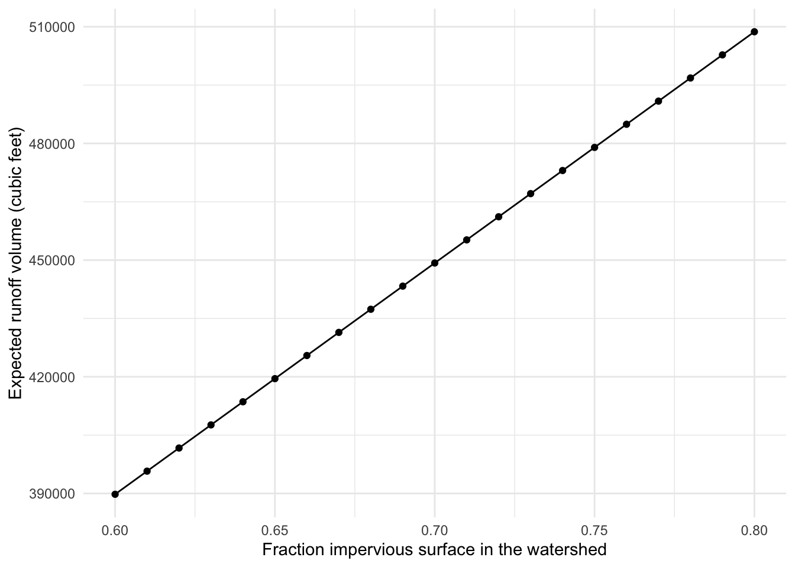

predict_runoff <- function(frac_impervious, watershed_area) {
ifelse(frac_impervious <= 1, TRUE, stop("NOPE"))
runoff_coef <- 0.05 + 0.9 * frac_impervious
runoff_volume <- 3630 * 1.0 * {runoff_coef} * watershed_area
print(runoff_volume)
}Estimate storm runoff volume
One established way to calculate the volume of stormwater expected for a watershed (necessary to design best management practices & systems) is the Simple Method, which involves two steps. First, the runoff coefficient \(R_v\) (storm runoff/storm rainfall) is calculated from:
\[R_v = 0.05 + 0.9 * I_A\]
Where \(R_v\) is the runoff coefficient (unitless), and \(I_A\) is the fraction of the watershed that is considered “impervious” (unitless).
The volume of stormwater that needs to be handled, \(V\) in cubic feet, is then calculated by:
\[V=3630 * R_D * R_v * A\] where \(R_D\) is the “design storm rainfall depth” in inches, usually set to 1.0 or 1.5, \(R_v\) is the runoff coefficient calculated above, and \(A\) is the watershed area in acres.
- Create a function called
predict_runoffthat estimates the storm runoff volume using inputs for the impervious fraction and watershed area (you can use a constant value of 1 for \(R_D\) here)
Solution
#' Estimate storm runoff volume
#'
#' @param frac_impervious
#' @param watershed_area
#'
#' @returns runoff_volume
#' @export
#'
#' @examples
#'
predict_runoff <- function(frac_impervious, watershed_area) {
ifelse(frac_impervious <= 1, TRUE, stop("NOPE"))
runoff_coef <- 0.05 + 0.9 * frac_impervious
runoff_volume <- 3630 * 1.0 * {runoff_coef} * watershed_area
print(runoff_volume)
}- Source your
storm_runoff.Rscript so you are able to use thepredict_runofffunction in your.Rmd
Solution
source(here::here("storm_runoff.R"))- In a code chunk in your
runoff_volumes.Rmd, use yourpredict_runofffunction to estimate stormwater volume for a watershed of 182 acres, over a range of estimates for the impervious fraction (from 0.6 to 0.8, by increments of 0.01)
Solution
# Make the sequence of impervious fractions
impervious_sequence <- seq(from = 0.6, to = 0.8, by = 0.01)
# Make predictions for volume at all values of impervious fraction, for watershed area = 182
val <- predict_runoff(frac_impervious = impervious_sequence, watershed_area = 182) [1] 389789.4 395735.3 401681.3 407627.2 413573.2 419519.1 425465.0 431411.0
[9] 437356.9 443302.9 449248.8 455194.7 461140.7 467086.6 473032.6 478978.5
[17] 484924.4 490870.4 496816.3 502762.3 508708.2- Bind into a data frame
Solution
runoff_df <- data.frame(impervious_sequence, val)- Create a ggplot graph that has both dots and connecting lines (i.e., you’ll layer
geom_point()andgeom_line()). Update axis labels. Export a png of your graph to thefigsfolder usingggsave.
Solution
ggplot(data = runoff_df, aes(x = impervious_sequence, y = val)) +
geom_point() +
geom_line() +
theme_minimal() +
labs(x = "Fraction impervious surface in the watershed",
y = "Expected runoff volume (cubic feet)")
Tilapia imports in the US
- Read in the data as
us_tilapia_imports
Solution
us_tilapia_imports <- read_csv(here::here("data", "us_tilapia_imports.csv"))names(us_tilapia_imports) # Check variable names [1] "country" "1992" "1993" "1994" "1995" "1996" "1997"
[8] "1998" "1999" "2000" "2001" "2002" "2003" "2004"
[15] "2005" "2006" "2007" "2008" "2009" "2010" "2011"
[22] "2012" "2013" "2014" "2015" "2016" "2017" "2018" dim(us_tilapia_imports) # Check number of rows and columns[1] 207 28- Use
pivot_longer()to reshape the data into long format and coerce the year column tonumeric
Solution
us_tilapia_imports_long <- us_tilapia_imports |>
pivot_longer(cols = '1992':'2018',
names_to = 'year',
values_to = 'tilapia_volume_kpounds') |>
mutate(year = as.numeric(year))- Use
dplyr::group_by() %>% summarize()to find the total US tilapia imports by year, store asyearly_tilapia_tot
Solution
yearly_tilapia_tot <- us_tilapia_imports_long |>
group_by(year) |>
summarize(annual_total = sum(tilapia_volume_kpounds, na.rm = TRUE))- Create a ggplot line graph of total US tilapia imports for all years in
yearly_tilapia_tot. Update axis labels (include units as necessary), then export your graph as a .png tofigs
Solution
ggplot(data = yearly_tilapia_tot, aes(x = year, y = annual_total)) +
geom_line()- Create a subset that only retains imports from Ecuador, Honduras, Costa Rica, and Mexico
Solution
limited_us_tilapia <- us_tilapia_imports_long |>
filter(country %in% c("Ecuador", "Honduras", "Costa Rica", "Mexico"))- Create a ggplot graph of total US tilapia imports over time, for those four countries in the subset you created above, separated by country. Update axis labels, add a title, customize your color scheme, update the theme. Export a .jpg of your graph to
figs
Solution
ggplot(data = limited_us_tilapia,
aes(x = year, y = tilapia_volume_kpounds)) +
geom_point(aes(color = country))